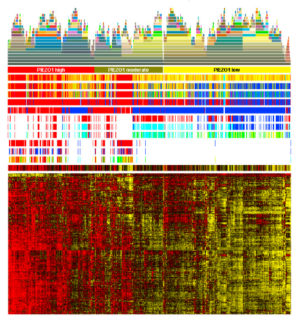

Xuejun Li (Richard Li), Professor, Department of Neurosurgery, Xiangya Hospital, from Liuyang, Hunan. His research interests focused on the basic and clinical research on neurosurgical diseases, such as brain tumors (glioma and pituitary adenoma) and vascular diseases (cavernous malformation and arteriovenous malformation), with a special focus on the pathogenic mechanism, prevention, treatment, and the damage induced by brain diseases including its repair.
The main research directions are the clinical and basic research in neuro-oncology, development of intelligent diagnosis system in central nervous system tumor, epigenetics of glioma, etc.
We focused on study on microsurgery and neural function protecting technology in neuro-oncology.
We focused on the EGFL7’s function in gliomagenesis.

We use multi-omics data to screen candidate biomarkers in neuro-oncology.
We use machine learning models to use the image data to help doctors to diagnosis.